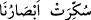
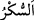

his kapısı kapatıldı, yâni ‘Şu gördüğümüz şeyin dış dünyâda gerçek bir varlığı yok!’
derler.
el-Kâmus’ta şöyle der: “__WORD__, gözlerimiz bakmaktan alıkonuldu, şaşkına
çevirildi ya da perdelenip örtüldü, mânâsınadır. Tehzîbü’l-masâdır’da şöyle der: “
” bağlanmak demektir. Nitekim Kâşifî şöyle der: “Ancak bizim gözlerimiz bağlanmış,
bulanık görür hâle getirilmiştir.”
“Daha doğrusu bize büyü yapılmıştır” derler.” Mutlaka Muhammed bizi
büyülemiştir. Nitekim diğer apaçık mûcizeler geldiğinde de onlar böyle demişlerdi.
Allah Teâlâ, onların sözlerini şöyle aktarıyor: “Eskiden beri devam edegelen bir
büyüdür, derler.” (el-Kamer 54/2)
Hulâsa istedikleri şey kendilerine verilse bile, devamlı inâd ve inkâr ettikleri ve bu
hususta son râddeye vardıkları için mutlaka yalanlayacaklardır. el-Kevâşî’de böyle
geçmektedir.
Âyette hasr, “boyanma”da değil “gözler”dedir. Sanki onlar şöyle demişlerdir:
‘Akıllarımız değil gözlerimiz boyandı. Bizim her ne kadar bu şeyler gözümüzde
canlandıysa da biz aklımızla biliyoruz ki durum onun aksinedir.’ Sonra sanki yalnız
gözlerinin boyandığı düşüncesinden vazgeçerek şöyle demişlerdir: ‘Bilakis bu,
Muhammed’in bize yaptığı bir sihir yüzünden akıllarımıza da sirâyet etti.’
Ey Rasûl, sen büyücü değilsin
Öyle ki sen asla mecnun değilsin
Bilesin ki sihir hârikulâde olaylardandır. Hârikulâde şeyler velîlerden de sâdır olur ki
buna kerâmet denir. Hârikulâde şeyler veli olmasalar da yaratılışları îcâbı güçlü
nefislere sâhip kişilerden de sâdır olabilir. Bu kimseler de iki kısımdır: Ya yapıları
îcâbı hayırlı olur ya da şerli. İlki, velîlik makamına ulaşırsa velî olur. Bu makama
ulaşmadığı takdirde ise mü’minlerin sâlihlerinden, hem de diğer müslümanları salâha
erdiren kimselerdendir.
İkincisi ise habis bir sihirbazdır. Her ikisinin de gerekli şartların elvermesi
durumunda şehâdet âleminde tasarruf imkânı vardır. Hâricî sebepler kendilerine
yardımcı olduğu takdirde sihirbaz Mısır hükümdarları (Fir’avnlar) gibi herkesi
kendilerine bende kılarlar. Sebepler elvermediği takdirde ise böyle bir şey yapamazlar.
Ancak kendilerine has sebeplerle ve sihirle meşgul olma güçleri kadar bir şey
yapabilirler.
Mûcizenin aksine sihir kalıcı değildir. Meselâ Kur’ân bütün zamanlar boyunca
kalacak bir mûcizedir. Mucizenin aksine, sihre karşı durulması mümkündür. Sihir ancak
fâsıkların elinde ortaya çıkar. Kehânet, kumlara bir şeyler yazma, çakıl taşları ve sâire
ile yapılan işlemler, ‘tark’ adı verilen genellikle kadınların yaptığı bir şey olan çakıl
taşları ile vurmak, kuma çizgi çizerek (fal bakıp) karşılığında para almak haramdır.
Fethu’l-karîb’de böyle geçmektedir.